Headers (Tiêu đề gói tin)
Tại sao chúng ta cần Headers? (Why Do We Need Headers?)
Trong phần trước, chúng ta đã thấy rằng ở Layer 3, dữ liệu di chuyển qua Internet dưới dạng packet (gói tin). Giả sử một ứng dụng muốn gửi một tệp qua Internet. Chúng ta có thể lấy một số bit của hình ảnh, đặt chúng vào một packet và gửi qua Internet. Khi một switch nhận được chuỗi các bit 1 và 0 này, nó hoàn toàn không biết phải làm gì với chúng.
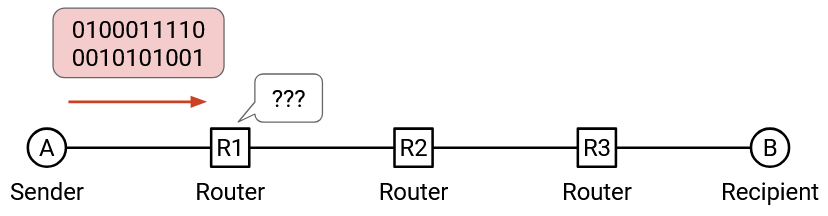Trong phép so sánh, nếu tôi viết một bức thư cho bạn mình và đưa nó cho bưu điện, bưu điện sẽ không biết phải làm gì với nó. Thay vào đó, chúng ta nên đặt bức thư vào một phong bì và ghi một số thông tin lên phong bì (ví dụ: địa chỉ của bạn tôi) để cho bưu điện biết phải làm gì với bức thư.
Tương tự như phong bì, khi chúng ta gửi một packet, chúng ta cần gắn thêm metadata (siêu dữ liệu) để cho hạ tầng mạng biết phải xử lý packet đó như thế nào. Phần siêu dữ liệu bổ sung này được gọi là header (tiêu đề). Phần còn lại của các bit (ví dụ: tệp đang được gửi, bức thư bên trong phong bì) được gọi là payload (tải dữ liệu).
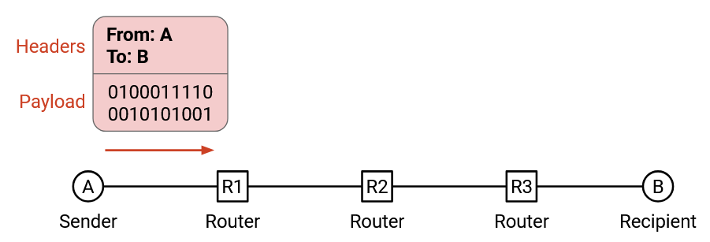Trong phép so sánh, bưu điện không nên đọc nội dung bên trong bức thư, mà chỉ đọc những gì ghi trên phong bì để quyết định cách gửi. Tương tự, hạ tầng mạng chỉ nên đọc header để quyết định cách chuyển dữ liệu.
Người nhận quan tâm đến nội dung bên trong bức thư, không phải phong bì. Tương tự, ứng dụng ở end host (máy đầu cuối) quan tâm đến payload, không phải header. Tuy nhiên, end host vẫn cần biết về header để có thể thêm header vào packet trước khi gửi.
Headers được tiêu chuẩn hóa (Headers are Standardized)
Bạn cũng có thể coi header như API giữa end host gửi/nhận dữ liệu và hạ tầng mạng vận chuyển dữ liệu. Khi viết phần mềm, chúng ta cần xác định interface (giao diện) mà người dùng sẽ sử dụng để tương tác với mã của chúng ta (ví dụ: các hàm có thể gọi, tham số truyền vào). Tương tự, thông tin trong header là cách người dùng truy cập các chức năng và truyền tham số cho mạng.
Tất cả mọi người trên Internet (mọi end host, mọi switch) cần thống nhất về định dạng của header. Nếu Microsoft Windows thay đổi mã trong hệ điều hành để gửi packet với cấu trúc header khác, sẽ không ai khác hiểu được các packet đó.
Điều này cũng có nghĩa là chúng ta cần cẩn thận khi thiết kế header. Một khi đã thiết kế và triển khai header trên Internet, việc thay đổi nó là rất khó (chúng ta sẽ phải thuyết phục tất cả mọi người đồng ý thay đổi). Đây là lý do tại sao các tổ chức tiêu chuẩn có thể mất nhiều năm để thiết kế và tiêu chuẩn hóa header.
Header nên chứa những gì? (What Should a Header Contain?)
Thông tin nào nên được đưa vào header?
- Địa chỉ đích: chắc chắn phải có, để cho biết nơi cần gửi packet.
- Địa chỉ nguồn: về mặt kỹ thuật không bắt buộc để chuyển packet, nhưng trên thực tế, chúng ta gần như luôn đưa vào để người nhận có thể gửi phản hồi lại cho người gửi.
- Checksum: để đảm bảo packet không bị lỗi trong quá trình truyền.
- Độ dài packet: vì packet có thể có kích thước khác nhau (ví dụ: người dùng chỉ cần gửi vài byte).
Nhiều header (Multiple Headers)
Quay lại phép so sánh bưu điện. Giả sử giám đốc Công ty A muốn viết thư cho giám đốc Công ty B. Thông điệp sẽ được gửi như thế nào?
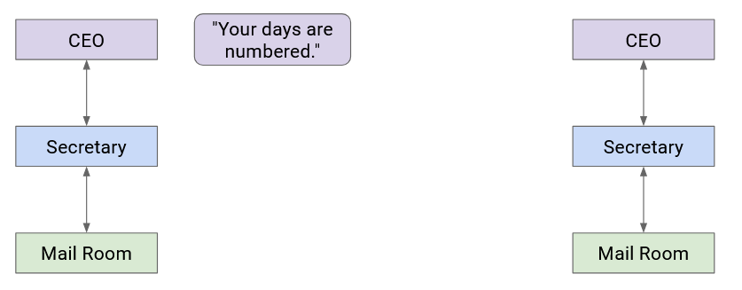Giám đốc Công ty A gấp thư và đưa cho thư ký. Thư ký đặt thư vào phong bì có ghi đầy đủ tên giám đốc Công ty B.
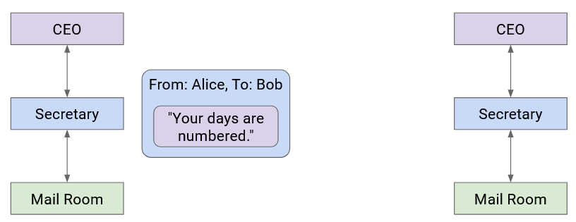Thư ký chuyển thư này cho phòng thư. Nhân viên bưu điện đặt thư vào một hộp có ghi địa chỉ đường phố của Công ty B và đưa gói hàng lên xe tải giao hàng.
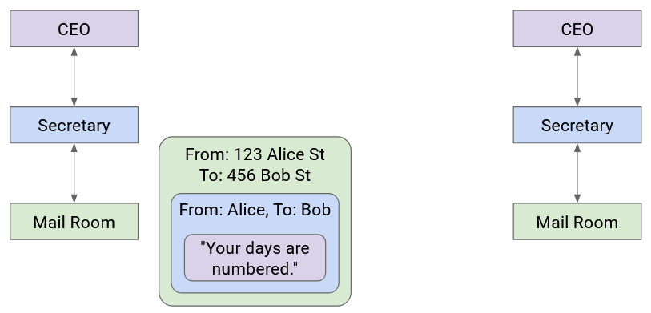Lúc này, bức thư đã được bọc trong nhiều lớp thông tin nhận dạng (phong bì, hộp). Công ty vận chuyển gửi thư tới Công ty B (có thể qua nhiều xe tải, máy bay, nhân viên bưu điện, v.v.).
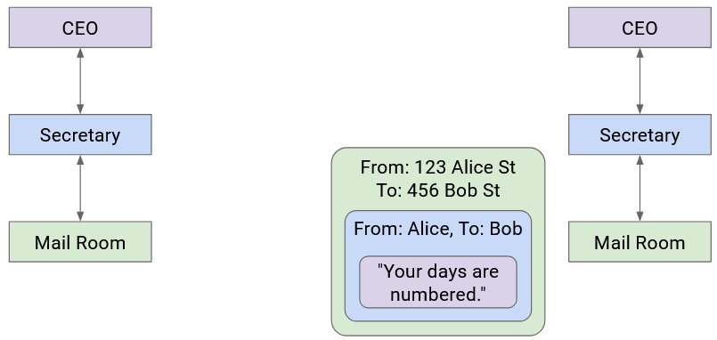Khi thư đến Công ty B, phòng thư gỡ bỏ hộp và chuyển phong bì cho thư ký.
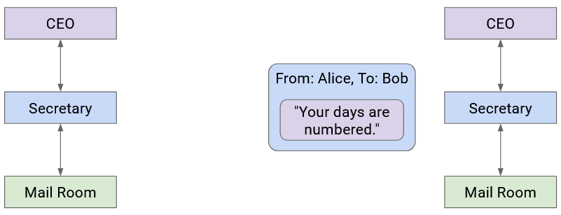Sau đó, thư ký nhìn thấy tên giám đốc trên phong bì, mở phong bì và chuyển thư cho giám đốc Công ty B.
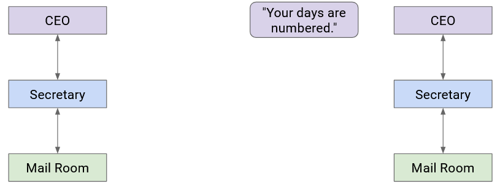Hãy chú ý rằng khi đi xuống các tầng trừu tượng thấp hơn, chúng ta bọc thêm nhiều header quanh dữ liệu. Khi đi lên các tầng trừu tượng cao hơn, chúng ta gỡ bỏ các lớp header này.
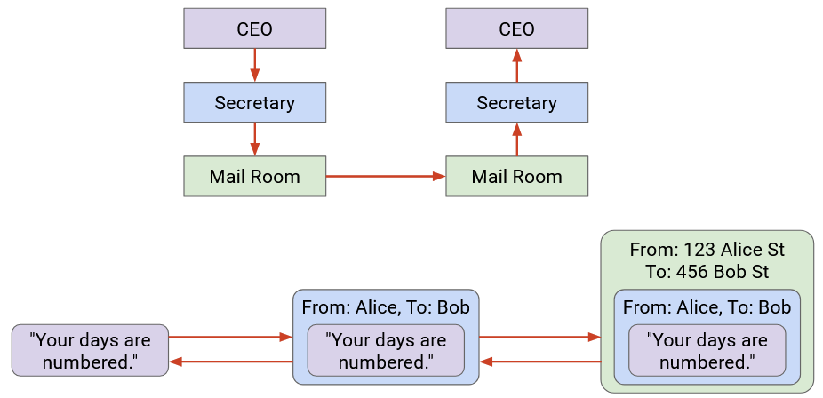Mỗi tầng chỉ cần hiểu header của riêng mình và “giao tiếp” (theo một nghĩa nào đó) với các peer (thực thể ngang hàng) ở cùng tầng. Khi Thư ký A ghi tên lên phong bì, điều đó là để Thư ký B đọc (không phải nhân viên bưu điện hay giám đốc).
Một cách chính xác hơn, trên Internet, các peer ở cùng tầng giao tiếp bằng cách thiết lập một protocol tại tầng đó. Giao thức này chỉ có ý nghĩa đối với các thực thể ở tầng cụ thể đó.
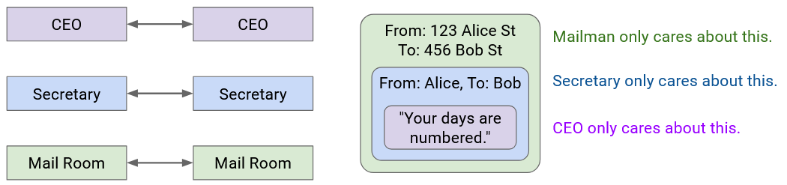Lưu ý rằng một số tầng cung cấp nhiều lựa chọn giao thức (ví dụ: giao thức không dây hoặc có dây ở Layer 2). Trong các trường hợp này, hai bên giao tiếp cần sử dụng cùng một lựa chọn giao thức. Một bên gửi có dây không thể giao tiếp với một bên nhận không dây.
Addressing and Naming (Địa chỉ hóa và Định danh)
Trước đó, chúng ta đã nói rằng header (tiêu đề gói tin) cần chứa địa chỉ của người nhận. Vậy chính xác thì địa chỉ đó là gì? Về mặt hình thức, network address (địa chỉ mạng) là một giá trị cho biết vị trí của một host (máy chủ/máy trạm) trong mạng.
Khi xem xét chi tiết các tầng khác nhau, chúng ta sẽ thấy mỗi tầng có một addressing scheme (cơ chế địa chỉ hóa) riêng. Nếu bạn muốn gửi thư trong tòa nhà Soda Hall, bạn có thể ghi địa chỉ đích là “413 Soda Hall”, và những người trong tòa nhà sẽ biết cách chuyển thư. Ngược lại, nếu muốn gửi thư tới New York, bạn phải ghi đầy đủ địa chỉ đường phố, ví dụ: “123 Main Street, New York, NY”.
Tương tự, các tầng khác nhau trong Internet có các cơ chế địa chỉ hóa phù hợp nhất cho tầng đó. Ví dụ: đôi khi một host được gọi bằng tên dễ đọc với con người (human-readable name), như www.google.com. Lúc khác, cùng host đó được gọi bằng địa chỉ IP (ví dụ: 74.124.56.2), là dạng máy có thể đọc được, trong đó con số này mã hóa thông tin về vị trí của server (và có thể thay đổi nếu server di chuyển). Lại có lúc, cùng host đó được gọi bằng địa chỉ MAC phần cứng, vốn không bao giờ thay đổi.

Layers at Hosts and Routers (Các tầng tại Host và Router)
Internet không chỉ đơn giản là một bên gửi và một bên nhận. Ngoài hai end host (máy đầu cuối), còn có các router (bộ định tuyến) chuyển tiếp packet qua nhiều hop (bước nhảy) để đến đích. Vậy ý tưởng về phân tầng và header hoạt động thế nào trên tất cả các thiết bị này?
End host cần triển khai tất cả các tầng. Máy tính của bạn cần biết về Layer 7 để chạy trình duyệt web. Máy tính của bạn cũng cần biết về Layer 1 để gửi các bit ra dây. Bạn cũng cần tất cả các tầng ở giữa để dữ liệu ở mức ứng dụng (bức thư của giám đốc) được truyền xuống tới tầng vật lý.
Còn router thì sao? Router cần Layer 1 để nhận bit qua dây, Layer 2 để gửi packet qua dây, và Layer 3 để chuyển tiếp packet trong mạng toàn cầu. Tuy nhiên, router không cần quan tâm đến Layer 4 và Layer 7. Router không chạy trình duyệt web để hiển thị trang, và cũng không cần xử lý tính tin cậy (nhớ lại mô hình best-effort service).
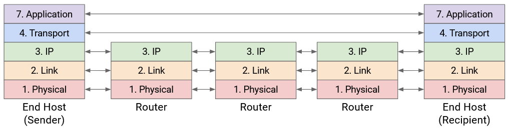Tóm lại: Ba tầng thấp nhất được triển khai ở mọi nơi, nhưng hai tầng cao nhất chỉ được triển khai tại end host.
Multiple Headers at Hosts and Routers: Analogy (Nhiều header tại Host và Router: Phép so sánh)
Hãy quay lại ví dụ gửi thư. Công ty A bọc bức thư trong phong bì, rồi đặt phong bì vào hộp. Chiếc hộp này không tự di chuyển đến Công ty B, mà có thể đi qua nhiều bưu điện.
Tại mỗi bưu điện, nhân viên mở hộp và phân loại thư. Họ nhìn vào phong bì (header tiếp theo được lộ ra sau khi mở hộp) và thấy rằng phong bì này gửi cho Công ty B.

Nhân viên bưu điện đặt phong bì vào một chiếc hộp khác (có thể khác loại), để bức thư có thể đến bưu điện tiếp theo trên đường tới Công ty B.
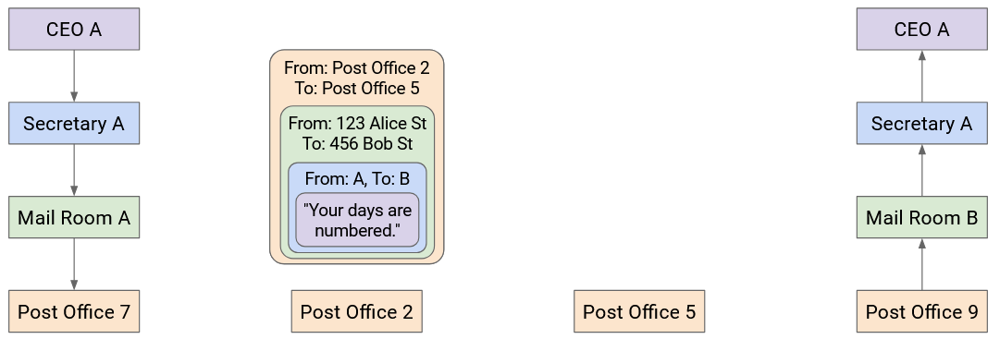Quy trình này lặp lại ở mỗi bưu điện: hộp được mở, lộ ra phong bì bên trong; sau đó phong bì được đặt vào hộp mới, gửi tới bưu điện kế tiếp. Lưu ý rằng không bưu điện nào mở phong bì để đọc thư bên trong, vì họ không cần đọc nội dung đó.
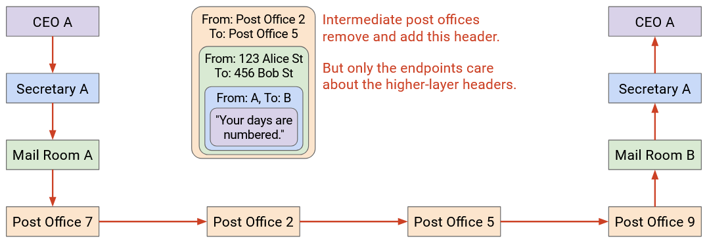Cuối cùng, bức thư đến Công ty B trong một chiếc hộp, và lần này Công ty B mở hộp, rồi mở phong bì, để lấy thư bên trong.
Multiple Headers at Hosts and Routers (Nhiều header tại Host và Router)
Bây giờ khi đã có bức tranh đầy đủ về host và router, hãy xem lại quá trình bọc và gỡ header khi packet đi qua nhiều hop trong mạng.
Đầu tiên, Host A lấy thông điệp và đi xuống protocol stack (ngăn xếp giao thức), thêm header cho Layer 7, Layer 4, Layer 3, Layer 2 và Layer 1. Giờ chúng ta có một packet được bọc header ở mọi tầng.
Layer 1 protocol gửi các bit của packet này qua dây tới router đầu tiên trên đường đến đích.
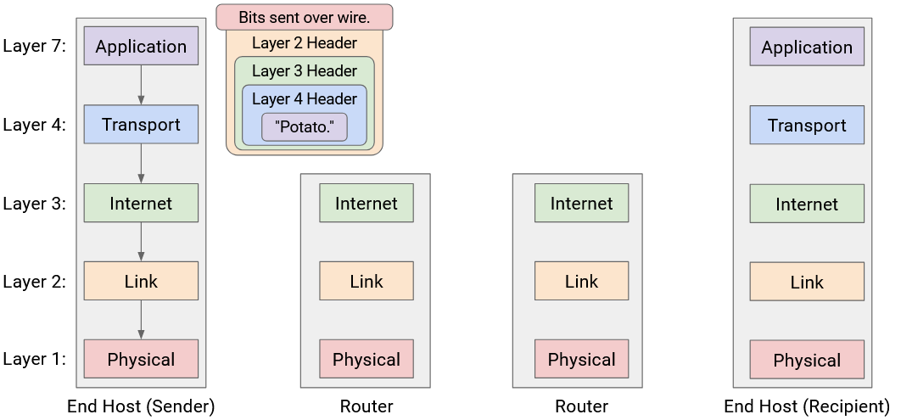Router này phải chuyển tiếp packet tới hop tiếp theo để packet đến được Host B. Chúng ta biết rằng việc chuyển tiếp packet trong mạng toàn cầu là nhiệm vụ của Layer 3. Do đó, router phải phân tích packet đến Layer 3.
Router đọc và gỡ bỏ header của Layer 1 và Layer 2, để lộ ra header của Layer 3 bên dưới. Router đọc header này để quyết định nơi chuyển tiếp packet tiếp theo.
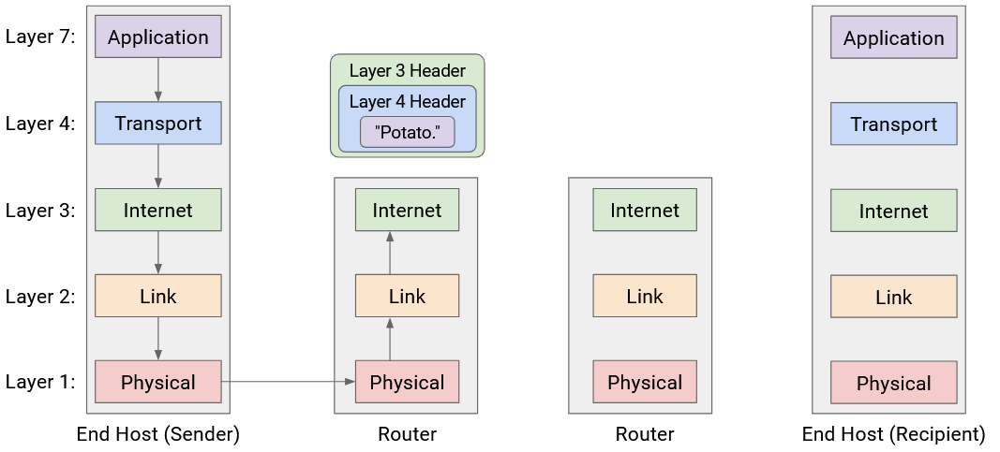Bây giờ, để gửi packet tới hop tiếp theo, router phải đi xuống stack một lần nữa, bọc header mới cho Layer 2 và Layer 1, rồi gửi các bit qua dây tới hop tiếp theo.
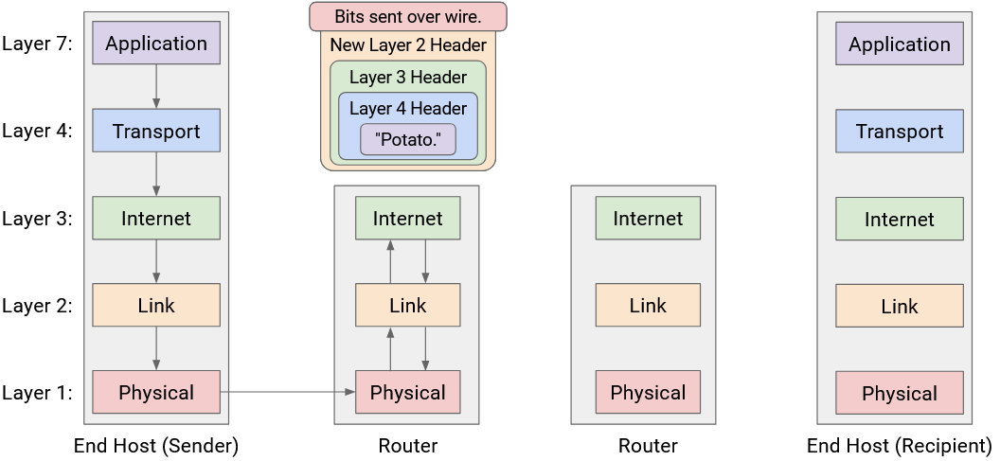Mẫu này lặp lại ở mỗi router: Layer 1 và Layer 2 được gỡ bỏ để lộ header Layer 3, sau đó header mới của Layer 2 và Layer 1 được bọc lại trước khi gửi packet đi. Lưu ý rằng không router nào đọc sâu hơn Layer 3 protocol, vì các tầng trên chỉ được phân tích bởi end host.
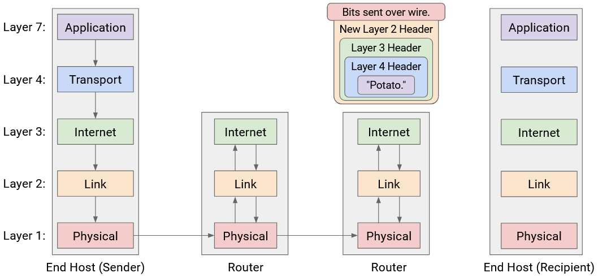Cuối cùng, packet đến Host B, nơi nó được gỡ từng tầng một: Layer 1, 2, 3, 4, 7. Host B đã nhận thành công thông điệp!
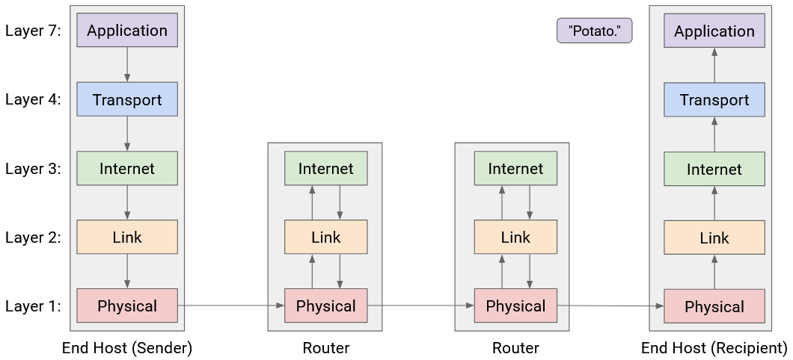Một hệ quả của mô hình phân tầng này là mỗi hop có thể sử dụng các giao thức khác nhau ở Layer 2 và Layer 1. Ví dụ: hop đầu tiên có thể truyền qua dây, và header Layer 2 và Layer 1 ban đầu do Host A và router đầu tiên sử dụng sẽ là giao thức có dây. Ngược lại, một hop sau đó có thể truyền qua liên kết không dây, và header Layer 2 và Layer 1 do các router ở hai đầu hop đó sử dụng sẽ là giao thức không dây.
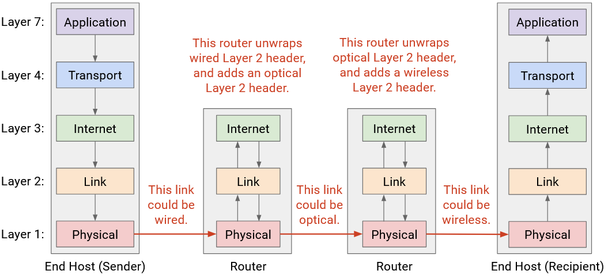Nói chung, chúng ta đã nói rằng mỗi tầng chỉ cần giao tiếp với peer (thực thể ngang hàng) ở cùng tầng. Giờ đây, chúng ta có thể thấy điều này diễn ra ở tất cả các tầng:
- Ở Layer 4 và Layer 7, hai host phải dùng cùng giao thức để gửi và nhận packet. Peer của host là host còn lại.
- Ở Layer 1 và Layer 2, router phải dùng cùng giao thức với router ở hop trước và hop sau, để nhận packet từ hop trước và gửi packet tới hop sau. Peer của router là các router lân cận trên đường đi.
Tóm lại: Mỗi router phân tích từ Layer 1 đến Layer 3, trong khi end host phân tích từ Layer 1 đến Layer 7.
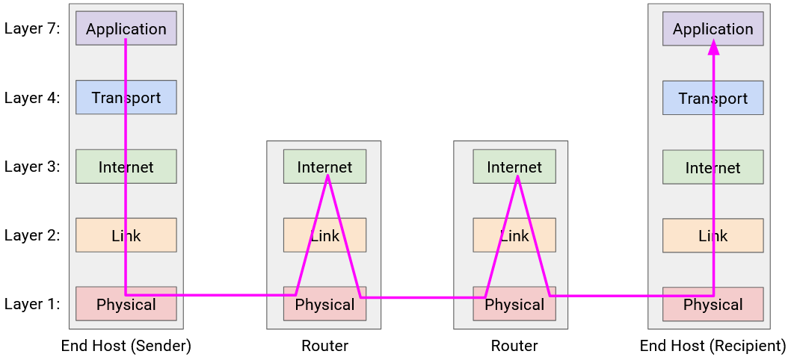